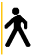

Untitled Document
La
Storia
C.
'Potevi dividere tutto questo con me, Martin'.
M. 'Lo so, Cosmo'.
C. 'Avresti avuto il Potere!'
M. 'Non lo voglio'.
C. 'Assurdo! Sai dove è possibile arrivare con questo?'
M. 'Si lo so. Ma non c'è nessuno lì.'
C. 'Esatto! Il nostro mondo non è più dominato
dalle armi, dall'energia, dai soldi; è dominato da piccoli uno e zero,
da bit e da dati, tutto è solo elettronica.'
M. 'Non mi riguarda'.
C. 'Non pretendo che gli altri capiscano tutto questo, ma
pretendo
che lo capisca tu, Martin! Abbiamo cominciato insieme questo viaggio.'
M. 'Non era un viaggio, Cosmo. Era un gioco.'
C. 'C'è una guerra là fuori, amico mio. Una
guerra mondiale. E non ha la minima importanza chi ha più pallottole,
ha importanza chi controlla le informazioni. Ciò che si vede, si sente,
come lavoriamo, cosa pensiamo, si basa tutto sull'informazione!'
M. 'Al tuo posto, distruggerei quel coso.'
(Sneakers
- I signori della truffa, USA 1992)
Questo
dialogo tra Martin (Robert Redford) e Cosmo (Ben Kingsley), i due protagonisti
del film "I signori della truffa, avveniva solo due anni prima che un gruppo
di amici, amanti della telematica e dei Bullettin Board System (BBS), si incontrasse
per la prima volta una sera di novembre in un pub pescarese per decidere di
dare vita alla Associazione Metro Olografix (nome "mutuato" dal racconto
di W.Gibson "Burning Chrome").
Fu
un vero atto di disobbedienza civile, un modo per opporsi alla repressione che
proprio in quegli anni le forze di polizia attuavano sulle reti di telematica
amatoriale con l'operazione denominata "Hardware I" e raccontata da
Carlo Gubitosa nel libro "Italian
Crackdown"; un modo di presentare una telematica alternativa, sociale,
ludica.
Nel
corso di questi anni, tra alterne vicende e fortune, l'associazione ha portato
avanti i suoi obiettivi statutari, spostando i suoi mezzi dalle reti fidolike
alla rete Internet ma mantenendo i suoi interessi nell'ambito della telematica
libera, della cultura informatica, dei cyberdiritti e continuando la sua opera
di alfabetizzazione, in particolare nel mondo del free software e dell'opensource.
A
distanza di anni da quella sera di novembre del 1994 l'Associazione Metro Olografix
vuole dunque festeggiare il suo decennale insieme a tutti gli amici, i compagni
di viaggio, i cyberautostoppisti incontrati lungo le strade virtuali di internet.
E lo vuole fare come è nel suo stile, in modo creativo, ludico, alternativo.
{kind=link}
{kind=link}
{kind=link}